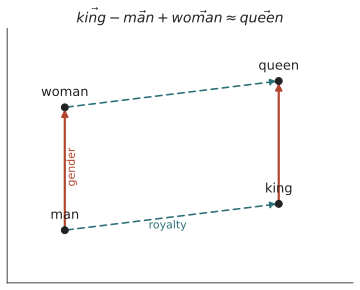

本页目录
意义 I · 分布假说与向量语义
对标：Harris 1954、Firth 1957、Landauer & Dumais (LSA)、Mikolov 2013 (word2vec)、Jurafsky & Martin ch.6 ｜ 前置：ling-01（意义即差异）、info-01（互信息）｜ 证据地位：分布结构可学【实】，"分布 = 全部意义"【争】（缺口留给 mean-03 接地）。 线三是全课的经验心脏，直答甲问、逼问乙问。它从一个 60 年前的假设出发——意义藏在共现里——一路走到词向量、走到 LLM 表征，也一路撞上它的天花板：分布能给你意义的骨架，但骨架关不关于世界，是另一回事。
1. 分布假说：意义即上下文分布
Harris–Firth 分布假说：语义相近的词，出现在相似的上下文里。 Firth 的名言："观其伴而知其义（You shall know a word by the company it keeps）。"
这是 ling-01 索绪尔"意义即差异/关系"的可操作化：不再空谈"关系"，而是具体地——一个词的意义 \(\approx\) 它的上下文分布 \(P(\text{context}\mid w)\)。"啤酒"和"红酒"意义近，因为它们的邻居高度重叠（喝、瓶、杯、干杯、微醺……）。意义从"词指向物"被彻底改写成"词嵌在词网里的统计位置"——一个能算的定义。
为什么这是甲问的钥匙：如果意义（至少一大部分）就住在共现统计里，那么一个只做"预测上下文/下一词"的系统，被这个任务逼着把这些统计结构学进去——就自动获得了意义的骨架。"预测下一词 → 学到语义"，第一块砖在这里。
2. 从共现矩阵到向量
把假说变成数字，最朴素的做法：词–上下文共现矩阵 \(M\)，\(M_{ij}\) = 词 \(i\) 与上下文 \(j\) 共现次数。但原始计数被高频词主导，要用逐点互信息（PPMI）校正（info-01 的互信息回来了）：
它衡量"\(w\) 与 \(c\) 共现，比独立假设下超出多少"——正是搭配强度。每个词于是成为一个（稀疏、高维）向量，词义相似度 = 向量夹角（余弦相似度）。这就是向量空间语义：意义被搬进了几何。
3. word2vec：预测即嵌入
Mikolov 2013 的 word2vec 把"计数"换成"预测"：训练一个浅网络，用中心词预测上下文（skip-gram）或反之（CBOW）。副产品是每个词的稠密低维向量（如 300 维）。关键洞见——
"训练模型去预测上下文"和"分解共现矩阵"数学上近乎等价（Levy & Goldberg 证明 skip-gram 隐式分解的正是 PPMI 矩阵）。所以"预测"和"分布统计"是一回事的两种实现——这条等价把 info-04"预测=压缩"接到了语义上：预测上下文，就是在压缩共现结构，就是在提取分布语义。
著名现象——线性类比： $\(\vec{king} - \vec{man} + \vec{woman} \approx \vec{queen}\)$

"性别""单复数""首都–国家"等关系，在向量空间里对应稳定的方向。意义关系 = 几何关系——这是分布假说最震撼的兑现，也是索绪尔"纯关系系统"的字面实现。
4. 语境化：从一个词一个向量到随语境流动
word2vec 给每个词一个固定向量——但 "bank"（河岸/银行）是一个词两个义。语境化嵌入（ELMo→BERT→GPT）修正了它：同一个词在不同句子里得到不同向量，由上下文动态计算（🔗 ai-07 Transformer 的自注意力就是干这个）。
这是分布假说的升级：意义不再是词的静态属性，而是词 × 语境的函数——更贴近 ling-04 认知语法"意义随识解流动"的直觉。LLM 的内部表征，本质是把 Firth"观其伴而知其义"推到了极致：每个 token 的意义 = 它在整个上下文里的关系指纹。
5. 分布语义能走多远（缺口预告）
它抓住了什么（真的很多）：近义、类比、话题、情感、语法类别、甚至一部分常识关联——都能从纯分布涌现。这是【实】，可复现，是现代 NLP 的地基。
它天生抓不住什么：
- 指涉（reference）：向量知道"水"和"喝、渴、湿"共现，但向量本身不连接到真实的水（接地问题，mean-03）。
- 真值与世界：分布反映"人们怎么说"，不直接反映"世界是怎样"。语料里的偏见、错误会被忠实学进向量（info-04 §4 的裂缝）。
- 组合的无穷创造：静态向量对新颖组合意义乏力（虽然语境化模型改善了很多）——这是生成派（ling-02）留下的老问题：分布擅长存储，组合性需要生成。
所以分档："意义有可从分布学到的一大块结构" = 【实】；"意义 = 分布，全部" = 【争】。这道缝，就是线三后三页（可学习性、接地、三轴）要逐一勘探的地形。
6. 要点与思考
思考 1（把三条线接起来） 索绪尔（意义即关系，ling-01）→ 互信息（关系可算，info-01）→ 分布假说（意义即上下文分布）→ word2vec（预测即嵌入）→ 语境化（意义随语境流动）。这条链是全课最漂亮的一条：一个 1916 年的哲学直觉，经信息论加持，变成了今天 LLM 的表征机制。你研究"智能从语料涌现"，这条链就是它最实的一段脚手架。
思考 2（分布是不是"影子"） 反方（Bender & Koller，mean-03）会说：向量学到的是意义的影子（分布关联），不是意义本身（关于世界）。正方（世界模型派，ai-01）会说：足够好的影子里，世界的结构会被反解出来（Othello-GPT）。这场"影子 vs 实质"之争，是甲问通往乙问的关卡——先把两边的最强论证都握在手里，别急着站队。
思考 3（做得动的） 在一小段语料上亲手建共现矩阵、算 PPMI、训一个玩具 word2vec，然后验证 king−man+woman≈queen——你会亲眼看见"意义"从纯计数里长出几何结构（labs L2）。再故意在有偏语料上训练，看向量如何吸进偏见——你就摸到了 §5 那道缝的边缘。\(\blacksquare\)
下一页：意义 II——可学习性之争。分布能学到结构，但"从数据能学到多少"有没有数学上限？刺激贫乏（ling-02）在这里遇上 Gold 定理、PAC 学习与归纳偏置——轴 I 第一次被摆到可证明/可实验的台面上。